UITK 難所 PoC — Web なら簡単で UITK だと高くつくもの
poc/uitk-hard-cases / Unity 6000.3.8f1・UI Toolkit ランタイム / Mac mini 1920×1080 の Game ビューで計測一覧
| 対象 | Web での手段 | UITK の結果 | 実装（C#行） | 計測 |
|---|---|---|---|---|
| レシピチェーン図 satisfactory-calculator 風 | dagre / elkjs ＋ SVG（React Flow） | 工夫で可 | 1,503 うち配置計算 約250 | 24ノード・27辺: 自動配置 初回7.8ms・2回目以降0.9ms、60fps 維持 |
| 電力グラフ Factorio 風 | uPlot / Chart.js / canvas | できた | 791 | UITK のメインスレッド時間/フレーム: 18系列×300点 1.5ms／48×1000 6.2ms／96×4000 47ms |
| 3D プレビュー three.js 相当 | three.js | できた | 289 | フレーム時間（vSync なし）: 小窓0個 2.1ms／12個 8.6ms／24個 14.4ms／48個 26.3ms。UITK 自体は 0.1ms |
| CSS の見た目表現 12項目 | CSS 1行 | そのまま可 3・工夫で可 7・不可 2 | 342 | 0.27ms/フレーム |
| 動き（通知・FLIP・ばね・時間差・アコーディオン） | CSS animation / framer-motion | できた | 302 | 0.04ms/フレーム |
| 文字（マークダウン・文中アイコン・リンク・省略・検索強調） | marked ＋ <img> ＋ <a> | 工夫で可 | 363 | 0.04ms/フレーム |
| 重ね・操作（ツールチップ・右クリック・DnD・1万行・浮動窓・モーダル） | title 属性 / HTML5 DnD / dialog 要素 | 工夫で可 | 554 | 1万行: 行要素28個、絞り込み0.5ms、自動スクロール中 0.67ms/フレーム |
計測値は ProfilerRecorder で読んだ UIElementsUpdatePanels＋UIElementsRepaintPanels（UITK の CPU 時間）と、フレーム時間。スクショはすべて PlayMode で実際に操作して撮った。
1. レシピチェーン図
実 master（コンピュータ 5個/分）から必要な機械と台数を逆算し、段組みで自動配置した。辺の太さは流量、色はアイテム、破線は流れの向きに動く。dagre 相当の配置（最長経路で段を決め、長い辺に中継点を挟み、重心法で並べ替えて交差を減らし、縦位置を最小二乗で揃える）は自作した。
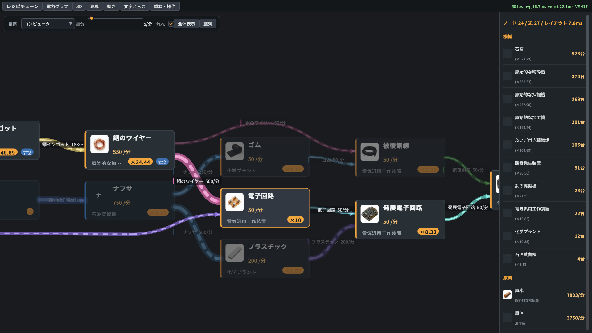
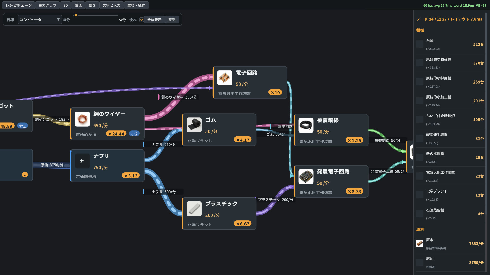
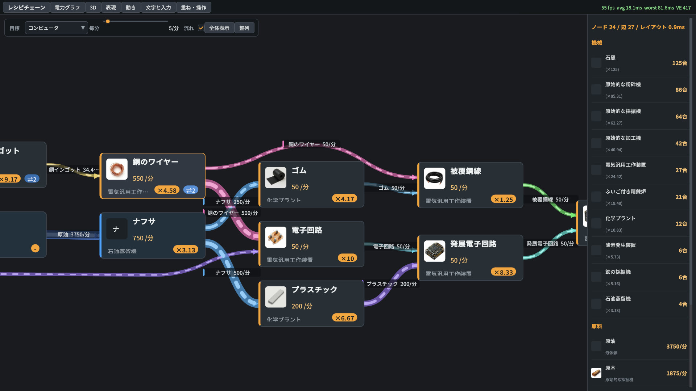
- できたこと: パン、カーソル中心のズーム、ホバー強調、ドラッグ、代替レシピの切り替え、流れる破線、辺ラベルの衝突回避、遠景で辺ラベルを隠す
- 高くついたもの: 配置計算の自作（約250行）。Painter2D の曲線と破線は素直に使えた
2. 電力グラフ
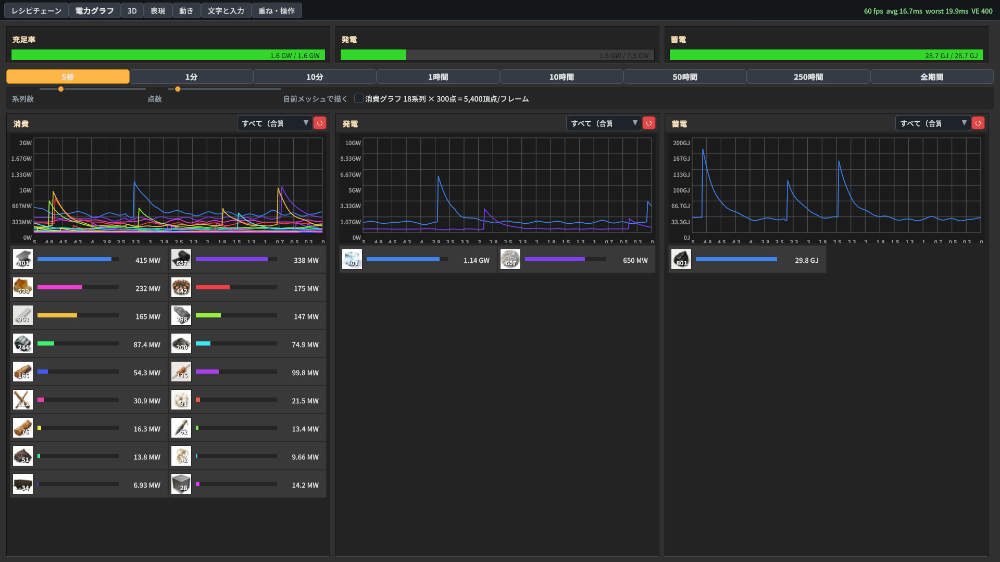
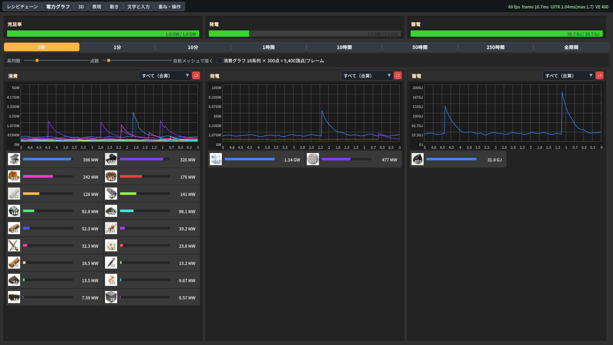
| 系列×点数 | Painter2D | 自前メッシュ（四角形を直書き） |
|---|---|---|
| 18×300（実用域） | 約1.5ms | 1.8ms |
| 48×1000 | 6.2ms | 11.9ms |
| 96×4000 | 47ms | 90ms |
Painter2D は Burst ジョブで線を作るので、素朴な自前メッシュより速かった。実用の規模（18系列×300点）では余裕がある。
3. 3D プレビュー
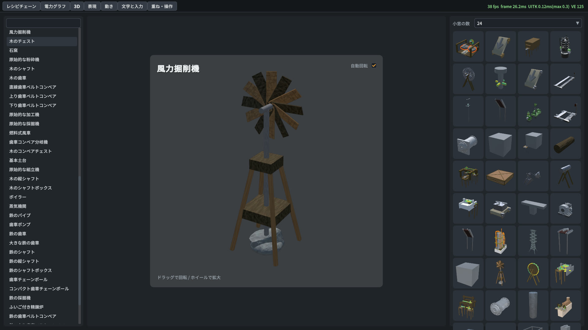
- 方式: ブロックのプレハブから描画用メッシュだけを複製し（スクリプトは起動させない）、専用レイヤー・専用カメラで RenderTexture に描いて、要素の背景に貼る。透明背景のまま UI に重なった
- 重さはカメラの数で決まる。1カメラあたり約0.5ms で、48個だと 26ms/フレームになる。動かない小窓はアイコンとして一度だけ焼き、ライブ描画は注目中の1〜数個に絞るのが設計の答え
4. CSS の見た目表現
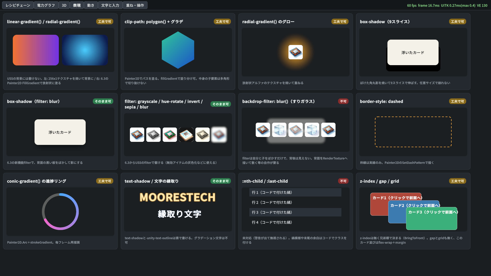
| CSS | 判定 | UITK での書き方 |
|---|---|---|
| filter: grayscale / hue-rotate / invert / sepia / blur | そのまま可 | 6.3 から USS の filter で書ける（無効アイテムの灰色化などに使える） |
| box-shadow | そのまま可 | 背面に黒い板を置き、filter: blur でぼかす。9スライスの影テクスチャを焼く方法も可 |
| text-shadow / 文字の縁取り | そのまま可 | text-shadow と -unity-text-outline。グラデーション文字は不可 |
| linear / radial-gradient | 工夫で可 | USS の背景には書けない。テクスチャを焼くか、Painter2D の FillGradient で塗る |
| clip-path: polygon() | 工夫で可 | Painter2D でパスを塗る。子要素を多角形で切り抜くことはできない |
| conic-gradient の進捗リング | 工夫で可 | Painter2D.Arc と strokeGradient |
| border-style: dashed | 工夫で可 | 枠線は実線のみ。Painter2D の SetDashPattern で描く |
| z-index / gap / grid | 工夫で可 | z-index は無く、兄弟順（BringToFront）で決まる。gap と grid も無いので、flex-wrap と margin で組む |
| backdrop-filter: blur（すりガラス） | 不可 | filter は自分と子をぼかすだけで、背後は見えない。背面を RenderTexture に描いて敷くなどの自作が要る |
| :nth-child / :last-child | 不可 | 警告が出て無視される。縞模様や末尾の余白は、コードでクラスを付ける |
5. 動き
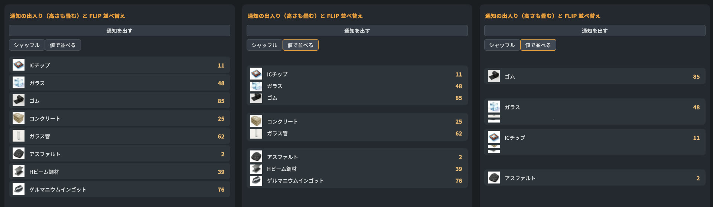
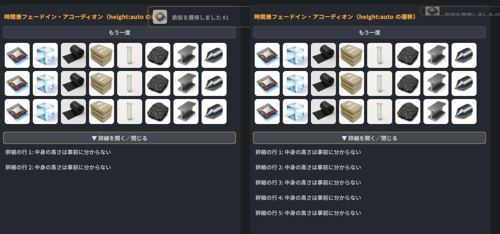
- USS の transition、
experimental.animation、自前の積分（ばね）の3つで、framer-motion 相当はひととおり書けた - 罠1:
height: autoは transition できない。今の高さを px で固定してから動かす - 罠2: 高さ0で overflow: hidden の親の中では、子の文字が高さ0で測られて潰れる（実測: 子の高さ0、ラベル12px＝余白だけ）。中身を absolute にして実寸を測る
- 罠3:
schedule.Executeは同じフレームのレイアウトより先に走るので、並べ替え直後の位置が取れない。GeometryChangedEventの旧矩形・新矩形を使えば FLIP がそのまま書ける
6. 文字と入力
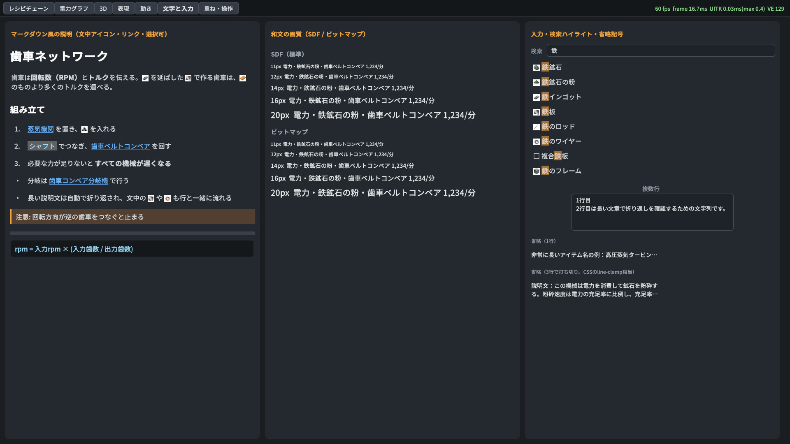
<sprite name="アイテム名">）。mod から実行時に読むアイコンを SpriteAsset にまとめた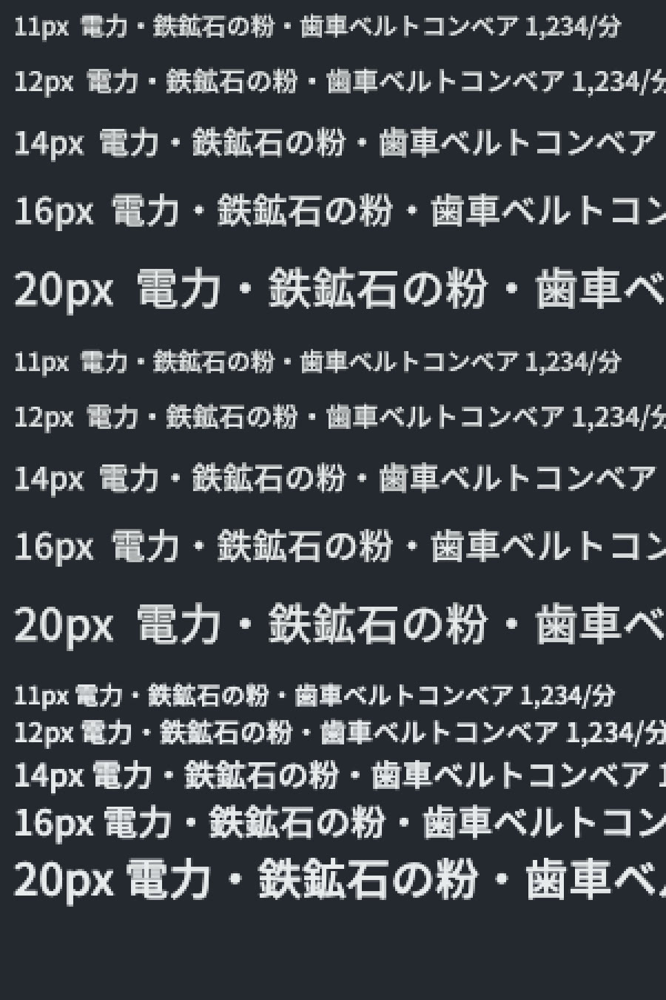
- 文中アイコンは内部 API 頼み: 実行時に SpriteAsset を作る公開 API が無い。アトラス・寸法・字面情報を、リフレクションで内部フィールドに書いて動かした。moorestech のアイコンは mod から実行時に読むので、エディタで事前に焼く方法は使えない。Unity の更新で壊れうるので、テストで検知する前提が要る
- 存在しない sprite 名を書くと、タグがそのまま文字で出る。アイコンの有無を確かめてからタグを付ける
- リンク:
<link>のクリックは PointerUpLinkTagEvent で拾えた。ただしリンク単位の :hover は無く、ホバーの見た目は行（Label）全体にしか当たらない - 複数行の省略記号（CSS の line-clamp 相当）は、高さを固定して text-overflow: ellipsis にするだけで効いた
- 和文の画質: 11〜12px は Chrome より線が細く、やや甘い。14px 以上はほぼ同等。UITK の SDF とビットマップの差はほぼ無い
- マークダウンは自前の変換（約80行）。Web ならライブラリの呼び出し1行
7. 重ね・操作
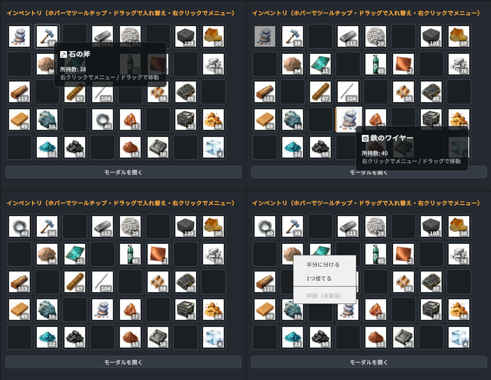
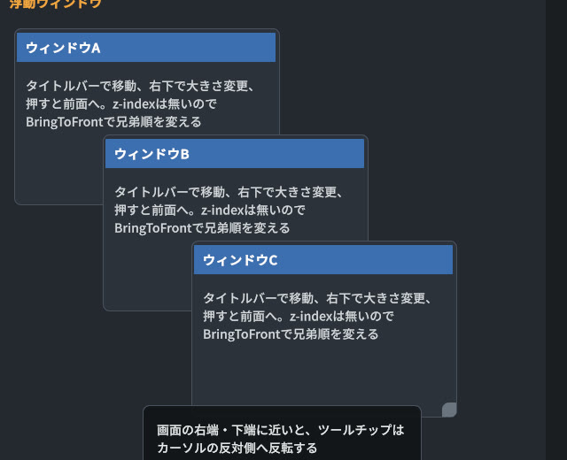
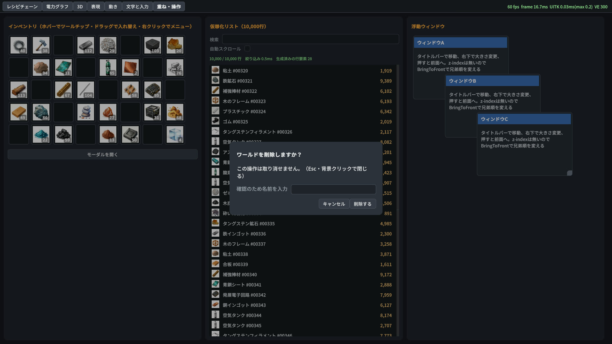
- ランタイムの UITK には、ツールチップの表示・HTML5 DnD・右クリックメニューの管理役が無い。それぞれ自作した（ツールチップ約90行、DnD 約140行）。右クリックメニューは GenericDropdownMenu がランタイムでも使えたが、見た目は明色の既定テーマのまま
- 罠: ポインタを捕捉してドラッグしている間も、下の要素に PointerEnter が届く。ツールチップがドラッグ中に出たので、抑止を足した
- 仮想化 ListView は1万行でも行要素28個で済み、絞り込みの処理は0.5ms（再バインドは次のフレーム）。自動スクロール中は 0.67ms/フレーム
- 浮動ウィンドウ: z-index の代わりに BringToFront で兄弟順を変える
横断的な知見（どの画面にも効く）
半透明が Web より薄く見える（Linear 色空間での合成）
| 重ねたもの | Chrome（実測） | UITK |
|---|---|---|
| #9c7b42 の上に黒60%（モーダルの幕） | #3e311a | #664f29（実測） |
| 白の上に rgba(18,20,24,0.96)（ツールチップ） | #1b1d21 | #3c3d3e（計算値。スクショでもアイコンが透けて見える） |
プロジェクトが Linear 色空間なので、UITK は線形の値で合成する。明るいものの上に暗い半透明を重ねると、Web よりずっと透ける。Web 版の rgba 値をそのまま移植すると、幕やツールチップが薄くなる。不透明度は実機で見て決め直すか、不透明の地に影を付ける。
既定テーマを暗色にする USS を自前で持つ
ランタイムの既定テーマは明色。ボタン・入力欄・ドロップダウン・スライダー・トグル・スクロールバー・ポップアップを暗色化する USS が146行要った。癖として、スライダーの入力部の高さが0になり、トラックがラベルの上にずれた。高さを明示して直した。
和文フォントは SDF の FontAsset を実行時に作る
FontDefinition.FromFont(Font) はビットマップ描画で、拡大すると崩れる（レシピ図のズームで発覚）。FontAsset.CreateFontAsset で SDF を作って FromSDFFont で当てる。
その他
- CSS と同じく詳細度で負ける（
.root Labelが.h1に勝つ）。自分のミスだが、Web と同じ注意が要る - PackTextures はアトラスを必要最小の大きさに縮める（512→256）。UV は縮んだ後の寸法で計算する
- Advanced Text Generator は、プロジェクト設定で有効にしないと使えない（今回は未検証）
- 開発の道具: UITK を含めた画面は ScreenCapture.CaptureScreenshot でないと撮れない（uloop screenshot の rendering モードには UITK が写らない）
moorestech の移行への含意
- 最初に共通の基盤を作る: 暗色テーマ USS／ツールチップ層／DnD（インベントリ用）／右クリックメニューの見た目／アイテムアイコンの SpriteAsset。どの画面もこれらに乗るので、画面ごとに作り直さない
- アイコンの SpriteAsset は内部 API に依存する。Unity を更新したら最初に壊れる箇所なので、構築と描画のテストを置く
- 3D は「焼いたアイコン＋ライブ1〜数個」の構成にする。カメラ1台あたり約0.5ms
- 半透明の値は Web 版から流用しない（Linear 合成で薄くなる）
- グラフ類（電力・レシピ）は Painter2D で十分速い。レシピ図の自動配置はこの PoC の約250行を基にできる
未検証
- 日本語 IME での入力（自動操作では確かめられないので、手で確認が要る）
- ゲームパッド・キーボードでのフォーカス移動、モーダル内へのフォーカスの閉じ込め
- Windows 実機・4K・UI スケール変更での見え方
- Advanced Text Generator
再現方法
ブランチ poc/uitk-hard-cases の Assets/Scenes/Other/UitkPoc.unity を開いて Play する。上部のタブで7つのデモを切り替えられ、右上に fps・UITK の時間・要素数が出る。コードは Assets/Scripts/Client.UitkPoc/（Editor 限定の asmdef なので、ビルドには入らない）。シーンの UitkPoc オブジェクトの modDirectory は Mac mini の master ピンの絶対パスなので、別の機器では手元の moorestech_master/server_v8/mods/moorestechAlphaMod_8 に差し替える。